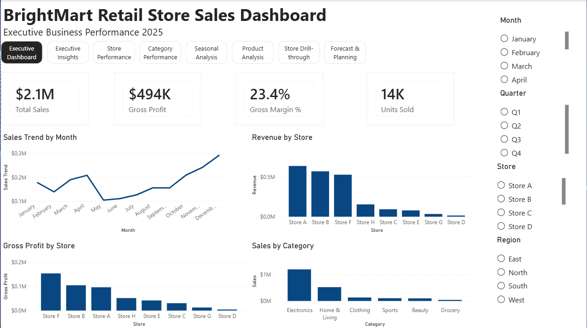
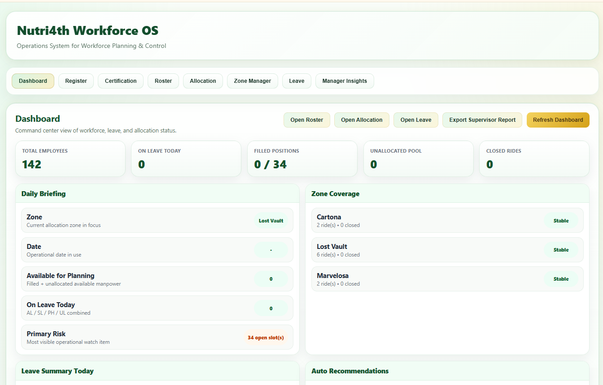
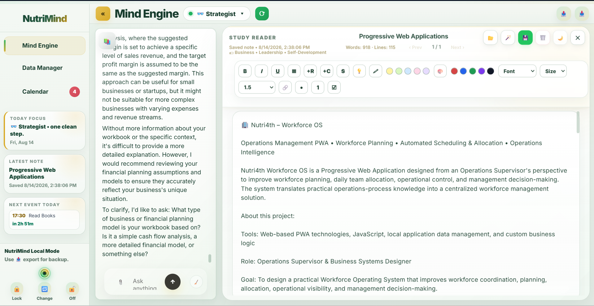
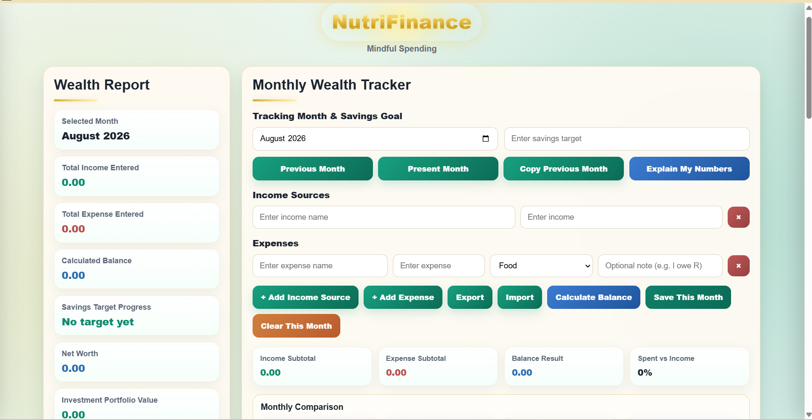

About Me
Operations & Business Analytics professional with 10+ years of experience leading and supporting high-volume operations across hospitality, healthcare, and entertainment. I combine hands-on operational leadership with data analysis, process improvement, and technology to help businesses make better decisions.
Skilled in Power BI, Excel, SQL, Tableau, dashboard development, KPI reporting, workflow analysis, and operational planning. I have built practical business solutions ranging from interactive analytics dashboards to workforce and operations management systems.
My approach combines an operator's understanding of real-world business processes with a data-driven mindset—turning operational challenges into structured workflows, measurable insights, and practical solutions that improve performance.
Key Skills & Tools
Soft Skills
Work Experience
Freelance Operations & Administrative Support Specialist
Dubai, UAE | October 2025 – Present
Providing freelance administrative and operational support for business and project-based activities, with a focus on organization, coordination, documentation, and workflow efficiency. Applied practical operations knowledge to organize information, coordinate resources, and improve the efficiency and structure of administrative workflows.
- Administrative support and business documentation
- Event coordination and administrative preparation
- Team allocation and resource coordination
- File indexing, document organization, and information management
- Data Organization, Manipulation, and Quality
- Scheduling and operational task coordination
- Process documentation and workflow organization
- Supporting ad-hoc operational and administrative requirements
Operations Supervisor
FnB Project Management Services – Dubai
Jul 2023 – Sep 2025
- Coordinated daily operations, scheduling, and resource allocation across multiple teams, ensuring efficient workflow and timely project execution
- Managed documentation, inventory tracking, and reporting systems, improving operational accuracy and visibility
- Supported cross-functional teams by ensuring availability of equipment and resources, minimizing operational disruptions
- Contributed to website optimization and SEO initiatives, enhancing online visibility and user engagement
- Utilized data tracking and reporting tools to monitor performance and support operational decision-making
- Managed multiple concurrent initiatives with clear prioritization in a fast-paced environment
Operations Team Leader
IMG Worlds of Adventure – Dubai
Dec 2020 – Mar 2023
- Led, trained, and certified 100+ team members, ensuring compliance with safety and operational standards
- Conducted onboarding and continuous coaching, improving team performance and service consistency
- Managed workforce allocation and forecasting to meet daily operational requirements efficiently
- Served as Rides Duty Manager, resolving guest concerns and maintaining high service standards
- Coordinated across departments to ensure smooth daily operations in a high-volume environment
Operations Coordinator
IMG Worlds of Adventure – Dubai
Mar 2017 – Dec 2020
- Monitored 100+ CCTV feeds, ensuring safety, compliance, and timely incident response
- Developed and maintained inventory tracking systems, improving equipment accountability and operational readiness
- Collected and analyzed operational data (throughput, downtime, defects) to support reporting and performance improvement
Customer Care Executive
Life Line Hospital – Abu Dhabi
Apr 2014 – Nov 2016
- Managed patient registration, billing, and insurance coordination with high accuracy
- Delivered effective issue resolution, improving patient satisfaction and service experience
- Supported revenue consistency for key medical specialists through efficient service handling
Process Executive
GENPACT Services – Manila
Mar 2011 – Dec 2013
- Achieved high first-call resolution while maintaining efficient call handling times
- Conducted quality audits and supported training initiatives to improve team performance
Selected Projects
BrightMart Retail Analytics – Business Intelligence Dashboard
Business Intelligence/Analytics Project • Retail Performance Analysis • Power BI Dashboard • Data-Driven Decision Support
BrightMart Retail Analytics is an end-to-end Business Intelligence project built around a realistic 2,000-transaction retail dataset. The project was designed to demonstrate how structured business rules, data preparation, Power BI modeling, DAX, interactive visualization, drill-through analysis, and forecasting can transform raw retail transactions into actionable management insights.

Click image to expand view
About this Project
Tools: Microsoft Excel, Power Query, Microsoft Power BI, DAX, Data Visualization
Role: Business Analyst & Power BI Developer
Goal: To build a management-level retail analytics solution that transforms transaction data into insights for revenue, profitability, store, category, product, seasonal, and forward-planning decisions.
Objectives:
- Create a realistic retail dataset based on defined business and operational rules.
- Clean, validate, and prepare the dataset for business analysis.
- Develop meaningful KPIs and analytical measures using DAX.
- Analyze performance across stores, regions, categories, products, and seasons.
- Provide management with interactive tools for deeper investigation and decision-making.
- Extend historical analysis into sales and gross-profit forecasting.
Implementation:
- Dataset Development: Created 2,000 realistic retail transactions with defined rules for stores, categories, pricing, costs, profitability, and seasonal demand.
- Excel Data Preparation: Performed data cleaning, date validation, consistency checks, and business-rule validation before importing the data into Power BI.
- Power BI Data Model: Structured the dataset around a FactSales table and created supporting date/month/quarter logic for chronological analysis.
- DAX Analytics: Developed measures for Sales, Gross Profit, Gross Margin %, Units Sold, rankings, and other performance metrics.
- Executive Dashboard: Created KPI cards and visualizations covering overall revenue, profitability, units, stores, categories, and sales trends.
- Store & Category Analysis: Built dedicated analytical pages to identify high-performing stores, profitable categories, regional performance, and investment opportunities.
- Product Analysis: Developed product-level analysis including Revenue vs Margin and product performance comparisons.
- Seasonal Analysis: Examined monthly, quarterly, and seasonal patterns to understand demand behavior.
- Drill-through: Created a Store Drill-through experience allowing management to investigate an individual store's performance, products, category mix, and seasonality.
- Forecasting: Added sales and gross-profit forecasting to support forward planning.
Key Metrics Displayed:
- Total Sales
- Gross Profit
- Units Sold
- Revenue by Store
- Gross Profit by Store
- Revenue by Region
- Store Contribution %
- Sales by Category
- Profit Margin by Category
- Product Performance
- Seasonal Perfomance
- Sales Forecast
- Gross Profit Forecast
Business Questions Addressed
- How is the business performing?
- Which stores deserve investment?
- Which categories drive revenue and profit?
- How does seasonality affect performance?
- Which products deserve more investment?
- Why is a particular store performing the way it is?
- What does the forecast indicate for future planning?
How to Use
- Select a Month, Quarter, Store, or Category using the interactive filters.
- Review the Executive Dashboard KPIs and performance trends.
- Navigate to Store, Category, Seasonal, or Product analysis.
- Select a store and use Drill-through for deeper store-level analysis.
- Review Revenue vs Margin to identify product opportunities.
- Use the Forecast page to evaluate projected sales and gross-profit direction.
Nutri4th – Workforce OS
Operations Management PWA • Workforce Planning • Automated Scheduling & Allocation • Operations Intelligence
Nutri4th Workforce OS is a Progressive Web Application designed from an Operations Supervisor's perspective to improve workforce planning, daily team allocation, operational control, and management decision-making. The system translates practical operations-process knowledge into a centralized workforce management solution.

Click image to expand view
About this Project
Tools: Web-based PWA technologies, JavaScript, local application data management, and custom business logic
Role: Operations Supervisor & Business Systems Designer
Goal: To design a practical Workforce Operating System that improves workforce coordination, planning, allocation, operational visibility, and management decision-making.
Objectives:
- Centralize workforce and operational information into one system.
- Automate recurring workforce planning and allocation activities.
- Improve visibility of certification, leave, roster, and workforce availability.
- Provide Operations Supervisors with actionable operational information.
- Give management a structured view of workforce performance and operational pressure points.
Implementation:
- Operations Dashboard: Provides supervisors with a centralized view of operational performance.
- Roster: Generates a weekly team schedule through a one-click workflow.
- Allocation: Generates daily team allocations through a one-click process.
- Certification: Provides visibility into workforce certification and readiness.
- Zone Manager: Manages operational rides and zones, including permanent and temporary changes.
- Leave: Provides workforce leave and availability management.
- Manager Insights: Converts operational information into management-level insights for decision-making.
Key Capabilities:
- Workforce planning
- Automated roster generation
- Daily workforce allocation
- Certification monitoring
- Leave management
- Zone and ride management
- Operations performance monitoring
- Manager-level operational insights
How to Use
- Review operational performance through the Dashboard.
- Manage workforce registration and certification.
- Generate weekly rosters.
- Generate daily team allocations.
- Manage rides and operational zones through Zone Manager.
- Monitor leave and workforce availability.
- Use Manager Insights to support operational decisions.
NutriMind – AI-Powered Mind & Knowledge Companion
AI-powered PWA • API Integration • Structured Notes • Topic Exploration • Built-in Calendar
NutriMind is an AI-powered Progressive Web Application designed to support topic exploration, structured knowledge capture, personal notes, and organized planning in one environment. The application combines API-powered exploration with a built-in notes system and calendar to create a more structured personal knowledge workflow.

Click image to expand view
About this Project
Tools: HTML5, CSS3, JavaScript, API integration, local application storage, and calendar functionality
Role: Lead Developer & Product Designer
Goal: To create a personal knowledge and exploration environment that combines AI-assisted topic exploration with structured notes and planning.
Objectives:
- Provide an integrated environment for exploring topics through an external AI API.
- Capture and organize insights through NutriMind Notes.
- Connect knowledge exploration with personal planning.
- Reduce the need to move between separate applications for exploration, notes, and scheduling.
Implementation:
- AI Topic Exploration: Uses API integration to support interactive exploration of topics.
- NutriMind Notes: Provides a dedicated environment for capturing and organizing thoughts, research, and insights.
- Built-in Calendar: Connects planning and scheduling with the knowledge-management workflow.
- Integrated Workflow: Brings exploration, documentation, and planning together within one PWA.
Key Capabilities:
- AI-powered topic exploration
- Structured note management
- Personal knowledge organization
- Built-in calendar
- Integrated exploration-to-notes workflow
- Persistent personal workspace
How to Use
- Enter a topic for exploration.
- Use the AI-powered interface to explore the subject.
- Capture useful information in NutriMind Notes.
- Organize thoughts and reference material.
- Use the built-in calendar to connect planning with your workflow.
NutriFinance – Mindful Finance Tracker
Personal Finance PWA • Income & Expense Tracking • Wealth Reporting • Debt Management • Financial Tools
NutriFinance is a personal finance Progressive Web Application designed around mindful spending and financial awareness. It combines income and expense tracking, wealth reporting, debt monitoring, and practical financial tools into a single personal finance workspace.

Click image to expand view
About this Project
Tools: HTML5, CSS3, JavaScript, local application data management, and custom financial calculation logic
Role: Lead Developer & Product Designer
Goal: To create a practical personal finance system that helps users understand their spending, monitor financial progress, manage debt, and make more informed financial decisions.
Objectives:
- Track income and expenses in one centralized environment.
- Provide a clearer view of overall financial position.
- Monitor debt and repayment progress.
- Encourage mindful spending through financial visibility.
- Provide practical tools for financial planning and calculations.
Implementation:
- Income & Expense Tracker: Records and organizes financial inflows and outflows.
- Wealth Report: Provides an overview of financial position and progress.
- Debt Tracker: Centralizes debt information and monitoring.
- Savings Calculator: Helps evaluate savings scenarios.
- Currency Converter: Provides quick currency conversion for financial planning.
- Mindful Spending Workflow: Connects everyday transaction tracking with broader financial awareness.
Key Capabilities:
- Income tracking
- Expense tracking
- Wealth reporting
- Debt management
- Savings calculations
- Currency conversion
- Financial awareness and spending analysis
How to Use
- Record income and expenses.
- Review spending patterns and financial activity.
- Monitor overall wealth through the Wealth Report.
- Track outstanding obligations through the Debt Tracker.
- Use the Savings Calculator for planning.
- Use the Currency Converter when working with different currencies.
NutriTrack – Personal Nutrition Tracker
Privacy-first PWA • Local data storage • Real-time macro tracking • Built with vanilla JS
NutriTrack is a high-performance Progressive Web App (PWA) designed to streamline nutritional tracking through a "privacy-first" architecture. Developed as a custom solution to support a rigorous fitness regimen, the application eliminates the common latency of third-party food databases by utilizing a locally indexed library of favorites and user-defined entries.
Interactive Nutrition Tracker • Built with HTML5, CSS3, JavaScript ES6+ • LocalStorage API
About this Project
Tools: HTML5, CSS3 (Tailwind CSS), JavaScript (ES6+), and the LocalStorage API
Role: Lead Developer and Data Architect
Goal: To build a zero-latency nutrition tracker that functions offline and prioritizes local data privacy.
Objectives:
- Eliminate reliance on slow external APIs by building a custom local food database.
- Create a seamless "Search → Click → Add" workflow for multi-meal tracking (Breakfast, Lunch, Snack, Dinner).
- Implement real-time macro calculation and historical data persistence without a back-end server.
Implementation:
- Data Persistence: Leveraged localStorage for instant data retrieval and Day Streak maintenance.
- Automation: Built a dynamic search engine that indexes local favorites and custom user libraries.
- Visual Analytics: Integrated a progress reporting system to track caloric and protein trends.
Key Metrics Displayed:
- Personal Success: Successfully supported a weight loss journey from 96 kg to 77.3 kg.
- System Performance: Reduced search latency from over 5 seconds (external API) to under 10ms (local indexing).
- Consistency: Maintained a 100-day fitness and nutrition streak.
How to Use
- Type a food item in the search bar.
- Click the result to automatically inject it into the active meal section.
- Use the "Save Day" button to archive data and "Your Report" to view progress charts.
SaaS Subscription Cohort Analysis – Churn & Revenue Retention Study
Power BI Dashboard • Cohort Analysis • DAX Measures • Business Intelligence
This Power BI project uses cohort analysis to reveal how a high 95% paid conversion rate is being offset by significant customer and revenue churn. I transformed these complex subscription trends into actionable insights, providing a strategic roadmap to pivot from aggressive acquisition to sustainable, retention-led growth.

Click image to expand view
About this Project
Tools: Power BI Desktop, DAX, Data Modeling, Cohort Analysis Techniques
Role: Data Analyst (End-to-End Dashboard Design, Data Modeling & Business Interpretation)
Goal: To analyze subscription performance using cohort analysis and evaluate the impact of customer churn on revenue growth and retention.
Objectives:
- Calculate Customer Churn Rate and Revenue Churn Rate
- Analyze Monthly Recurring Revenue (MRR) trends over time
- Compare Active vs Cancelled subscribers
- Identify growth patterns in new cohorts
- Translate churn behavior into business risk insights
Implementation:
- Built a structured data model linking subscription data with a master calendar table
- Added business interpretation section to translate metrics into actionable insights
-
Developed DAX measures for:
- Customer Churn Rate
- Revenue Churn Rate
- Current MRR
- Paid Rate %
- Active Subscriptions at Start of Month
- Designed an executive-style dashboard with KPI cards, trend analysis, and cohort growth comparison
Key Metrics Displayed:
- Current MRR: $41.15K
- Customer Churn Rate: 67.36%
- Revenue Churn Rate: 65.30%
- Paid Rate: 95.38%
- Total Cohorts: 3.069K
- Active vs Not Active Subscribers
- New vs Cancelled Cohort Growth by Year
Recommendations:
- Despite strong paid conversion (95%), high customer and revenue churn (~65–67%) significantly limits long-term growth.
- Priority should be placed on improving retention by analyzing cancellation timing, customer lifetime behavior, and potential value gaps in service delivery.
- Reducing churn will have a stronger impact on sustainable MRR growth than increasing acquisition alone.
Cyclistic Bike Share Analysis
Tableau Dashboard • Excel Analysis • Member vs Casual Rider Behavior • Google Capstone
Capstone Project for Google Data Analytics Professional Certificate

Interactive Tableau dashboard • Explore ride patterns, seasonal trends, and user behavior
About this Project
Tools: Tableau, Excel
Role: Sole Contributor
Goal: To uncover behavioral patterns between annual and casual riders of Cyclistic bikes and provide data-driven recommendations that support marketing strategies, improve service utilization, and encourage the conversion of casual users into annual members.
Objectives:
- Compare usage trends (frequency, duration, and ride timing) between annual and casual riders
- Recommend actions to increase annual memberships and optimize bike resource allocation
Implementation:
This project used a 12-month dataset of Cyclistic bike riders (2023, Chicago), provided by the Google Data Analytics Capstone Project.
- Cleaned and analyzed the dataset using MS Excel
- Built an interactive dashboard in Tableau to visualize user behavior, ride durations, and popular bike usage
- Created key insights to support marketing and operations decisions
Key Metrics Displayed:
- Total rides in 2023
- Average ride duration by user type
- Total annual ride hours
- Ride counts for the most-used bike type
Recommendations:
- Improve ride efficiency by analyzing long ride durations
- Evaluate bike preference and replicate features in future procurement
- Scale operations in response to rising ride volume
- Encourage shorter rides with pricing strategies
- Rebalance bike availability based on underutilization insights
Data Science Jobs & Salaries Analysis
SQL • Excel • Tableau • Global Salary Benchmarking • Workforce Planning
SQL + Excel + Tableau analysis of global salaries across 70+ countries. Created interactive dashboard for benchmarking and workforce planning.
Interactive Tableau dashboard • Explore salary ranges, role comparisons, and industry insights
About this Project
Tools: SQL, Tableau, Excel
Role: Data Analyst
Goal: To analyze global job trends and salary benchmarks in the field of data science across multiple countries, providing insights to support career planning, compensation strategy, and workforce analysis.
Objectives:
- Understand the growth trajectory of data science jobs globally
- Identify roles with the most promising compensation opportunities
Implementation:
Utilized a cleaned dataset from Kaggle (Jobs and Salaries in Data Science) covering data from 2020–2023.
- Used SQL for data retrieval, filtering, and aggregation
- Applied Excel for additional metric review and formatting
- Built an interactive Tableau dashboard to visualize job counts, salary distributions, and hiring patterns across regions and roles
Key Metrics Displayed:
- Total number of jobs and job availability
- Average, minimum, and maximum salaries (USD)
- Country-wise and role-based data segmentation
Recommendations:
- Job Market Trends: A rising job count and high job availability suggests a strong, growing demand for data professionals globally.
- Salary Benchmarking: Salary ranges help set compensation expectations and can guide wage negotiation and policy.
- Career Planning: Significant gaps between average and max salaries point to high earning potential in specific roles or markets.
- Recruitment Strategies: High job availability with stagnant job creation may reflect turnover or skills mismatch.
- Economic Indicators: Salary and job trends can signal broader economic patterns across the data sector.
FnB Project Management Website
Web Design • SEO Optimization • Wix Platform • Digital Strategy
Developed the official company website using Wix as the main platform, with custom HTML/CSS enhancements and full SEO optimization.

Operational Infrastructure & Web Presence
Operations Management • Digital Strategy • UAE Theme Park Maintenance
Click image to view full size
About this Project
Tools: Wix, HTML, Google Search Console
Role: Web Designer & SEO Coordinator
Goal: To design and launch the official website of FnB Project Management Services, and implement SEO strategies to improve the company's visibility and indexing on Google.
Project Summary:
In this project, I collaborated closely with the client to understand their brand identity, service offerings, and functional requirements. Using Wix, I designed and developed a responsive, user-friendly website aligned with the company's image and operations.
Beyond visual design, I focused on Search Engine Optimization (SEO)—optimizing structure, metadata, and keyword placement to increase discoverability. The site was then registered and indexed using Google Search Console, successfully enhancing the company's digital footprint.
The project resulted in a fully functional online presence that met all technical, aesthetic, and strategic goals—supporting both brand credibility and market visibility.
Education & Certifications
Professional Certificate in Advanced Data Analytics (Ongoing) – Google / Coursera
Professional Certificate in Data Analytics – Google / Coursera
Bachelor's in Computer Science – AMA Computer University, Manila
Key Certifications: Google Data Analytics, Lean Six Sigma Green Belt, Power BI (Pragmatic Works), Project Management
Contact Me
Email: solace5710@gmail.com
LinkedIn: linkedin.com/in/ramirmendigo567